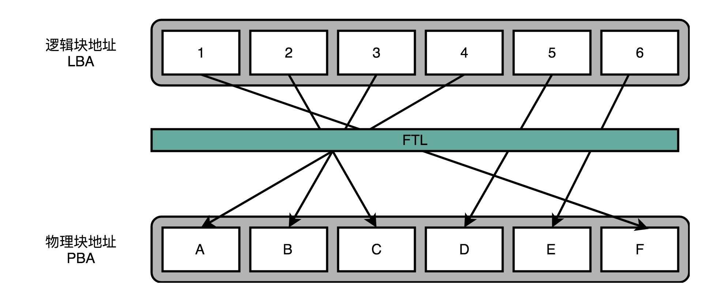
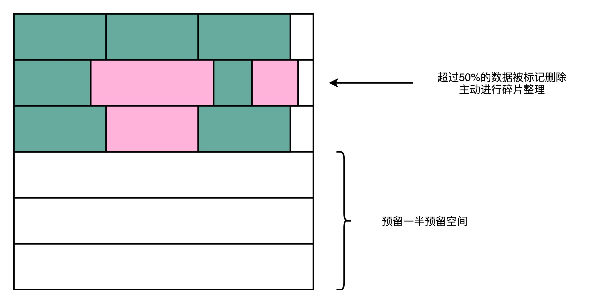

- 00 开篇词 为什么你需要学习计算机组成原理？.md
- 01 冯·诺依曼体系结构：计算机组成的金字塔.md
- 02 给你一张知识地图，计算机组成原理应该这么学.md
- 03 通过你的CPU主频，我们来谈谈“性能”究竟是什么？.md
- 04 穿越功耗墙，我们该从哪些方面提升“性能”？.md
- 05 计算机指令：让我们试试用纸带编程.md
- 06 指令跳转：原来if...else就是goto.md
- 07 函数调用：为什么会发生stack overflow？.md
- 08 ELF和静态链接：为什么程序无法同时在Linux和Windows下运行？.md
- 09 程序装载：“640K内存”真的不够用么？.md
- 10 动态链接：程序内部的“共享单车”.md
- 11 二进制编码：“手持两把锟斤拷，口中疾呼烫烫烫”？.md
- 12 理解电路：从电报机到门电路，我们如何做到“千里传信”？.md
- 13 加法器：如何像搭乐高一样搭电路（上）？.md
- 14 乘法器：如何像搭乐高一样搭电路（下）？.md
- 15 浮点数和定点数（上）：怎么用有限的Bit表示尽可能多的信息？.md
- 16 浮点数和定点数（下）：深入理解浮点数到底有什么用？.md
- 17 建立数据通路（上）：指令加运算=CPU.md
- 18 建立数据通路（中）：指令加运算=CPU.md
- 19 建立数据通路（下）：指令加运算=CPU.md
- 20 面向流水线的指令设计（上）：一心多用的现代CPU.md
- 21 面向流水线的指令设计（下）：奔腾4是怎么失败的？.md
- 22 冒险和预测（一）：hazard是“危”也是“机”.md
- 23 冒险和预测（二）：流水线里的接力赛.md
- 24 冒险和预测（三）：CPU里的“线程池”.md
- 25 冒险和预测（四）：今天下雨了，明天还会下雨么？.md
- 26 Superscalar和VLIW：如何让CPU的吞吐率超过1？.md
- 27 SIMD：如何加速矩阵乘法？.md
- 28 异常和中断：程序出错了怎么办？.md
- 29 CISC和RISC：为什么手机芯片都是ARM？.md
- 30 GPU（上）：为什么玩游戏需要使用GPU？.md
- 31 GPU（下）：为什么深度学习需要使用GPU？.md
- 32 FPGA、ASIC和TPU（上）：计算机体系结构的黄金时代.md
- 33 解读TPU：设计和拆解一块ASIC芯片.md
- 34 理解虚拟机：你在云上拿到的计算机是什么样的？.md
- 35 存储器层次结构全景：数据存储的大金字塔长什么样？.md
- 36 局部性原理：数据库性能跟不上，加个缓存就好了？.md
- 37 理解CPU Cache（上）：“4毫秒”究竟值多少钱？.md
- 38 高速缓存（下）：你确定你的数据更新了么？.md
- 39 MESI协议：如何让多核CPU的高速缓存保持一致？.md
- 40 理解内存（上）：虚拟内存和内存保护是什么？.md
- 41 理解内存（下）：解析TLB和内存保护.md
- 42 总线：计算机内部的高速公路.md
- 43 输入输出设备：我们并不是只能用灯泡显示“0”和“1”.md
- 44 理解IO_WAIT：IO性能到底是怎么回事儿？.md
- 45 机械硬盘：Google早期用过的“黑科技”.md
- 46 SSD硬盘（上）：如何完成性能优化的KPI？.md
- 47 SSD硬盘（下）：如何完成性能优化的KPI？.md
- 48 DMA：为什么Kafka这么快？.md
- 49 数据完整性（上）：硬件坏了怎么办？.md
- 50 数据完整性（下）：如何还原犯罪现场？.md
- 51 分布式计算：如果所有人的大脑都联网会怎样？.md
- 52 设计大型DMP系统（上）：MongoDB并不是什么灵丹妙药.md
- 53 设计大型DMP系统（下）：SSD拯救了所有的DBA.md
- 54 理解Disruptor（上）：带你体会CPU高速缓存的风驰电掣.md
- 55 理解Disruptor（下）：不需要换挡和踩刹车的CPU，有多快？.md
- 结束语 知也无涯，愿你也享受发现的乐趣.md
47 SSD硬盘（下）：如何完成性能优化的KPI？
如果你平时用的是 Windows 电脑，你会发现，用了 SSD 的系统盘，就不能用磁盘碎片整理功能。这是因为，一旦主动去运行磁盘碎片整理功能，就会发生一次块的擦除，对应块的寿命就少了一点点。这个 SSD 的擦除寿命的问题，不仅会影响像磁盘碎片整理这样的功能，其实也很影响我们的日常使用。
我们的操作系统上，并没有 SSD 硬盘上各个块目前已经擦写的情况和寿命，所以它对待 SSD 硬盘和普通的机械硬盘没有什么区别。
我们日常使用 PC 进行软件开发的时候，会先在硬盘上装上操作系统和常用软件，比如 Office，或者工程师们会装上 VS Code、WebStorm 这样的集成开发环境。这些软件所在的块，写入一次之后，就不太会擦除了，所以就只有读的需求。
一旦开始开发，我们就会不断添加新的代码文件，还会不断修改已经有的代码文件。因为 SSD 硬盘没有覆写（Override）的功能，所以，这个过程中，其实我们是在反复地写入新的文件，然后再把原来的文件标记成逻辑上删除的状态。等 SSD 里面空的块少了，我们会用“垃圾回收”的方式，进行擦除。这样，我们的擦除会反复发生在这些用来存放数据的地方。
有一天，这些块的擦除次数到了，变成了坏块。但是，我们安装操作系统和软件的地方还没有坏，而这块硬盘的可以用的容量却变小了。
磨损均衡、TRIM 和写入放大效应
FTL 和磨损均衡
那么，我们有没有什么办法，不让这些坏块那么早就出现呢？我们能不能，匀出一些存放操作系统的块的擦写次数，给到这些存放数据的地方呢？
相信你一定想到了，其实我们要的就是想一个办法，让 SSD 硬盘各个块的擦除次数，均匀分摊到各个块上。这个策略呢，就叫作磨损均衡（Wear-Leveling）。实现这个技术的核心办法，和我们前面讲过的虚拟内存一样，就是添加一个间接层。这个间接层，就是我们上一讲给你卖的那个关子，就是 FTL 这个闪存转换层。

就像在管理内存的时候，我们通过一个页表映射虚拟内存页和物理页一样，在 FTL 里面，存放了逻辑块地址（Logical Block Address，简称 LBA）到物理块地址（Physical Block Address，简称 PBA）的映射。
操作系统访问的硬盘地址，其实都是逻辑地址。只有通过 FTL 转换之后，才会变成实际的物理地址，找到对应的块进行访问。操作系统本身，不需要去考虑块的磨损程度，只要和操作机械硬盘一样来读写数据就好了。
操作系统所有对于 SSD 硬盘的读写请求，都要经过 FTL。FTL 里面又有逻辑块对应的物理块，所以 FTL 能够记录下来，每个物理块被擦写的次数。如果一个物理块被擦写的次数多了，FTL 就可以将这个物理块，挪到一个擦写次数少的物理块上。但是，逻辑块不用变，操作系统也不需要知道这个变化。
这也是我们在设计大型系统中的一个典型思路，也就是各层之间是隔离的，操作系统不需要考虑底层的硬件是什么，完全交由硬件的控制电路里面的 FTL，来管理对于实际物理硬件的写入。
TRIM 指令的支持
不过，操作系统不去关心实际底层的硬件是什么，在 SSD 硬盘的使用上，也会带来一个问题。这个问题就是，操作系统的逻辑层和 SSD 的逻辑层里的块状态，是不匹配的。
我们在操作系统里面去删除一个文件，其实并没有真的在物理层面去删除这个文件，只是在文件系统里面，把对应的 inode 里面的元信息清理掉，这代表这个 inode 还可以继续使用，可以写入新的数据。这个时候，实际物理层面的对应的存储空间，在操作系统里面被标记成可以写入了。
所以，其实我们日常的文件删除，都只是一个操作系统层面的逻辑删除。这也是为什么，很多时候我们不小心删除了对应的文件，我们可以通过各种恢复软件，把数据找回来。同样的，这也是为什么，如果我们想要删除干净数据，需要用各种“文件粉碎”的功能才行。
这个删除的逻辑在机械硬盘层面没有问题，因为文件被标记成可以写入，后续的写入可以直接覆写这个位置。但是，在 SSD 硬盘上就不一样了。我在这里放了一张详细的示意图。我们下面一起来看看具体是怎么回事儿。
一开始，操作系统里面有好几个文件，不同的文件我用不同的颜色标记出来了。下面的 SSD 的逻辑块里面占用的页，我们也用同样的颜色标记出来文件占用的对应页。
当我们在操作系统里面，删除掉一个刚刚下载的文件，比如标记成黄色 openjdk.exe 这样一个 jdk 的安装文件，在操作系统里面，对应的 inode 里面，就没有文件的元信息。
但是，这个时候，我们的 SSD 的逻辑块层面，其实并不知道这个事情。所以在，逻辑块层面，openjdk.exe 仍然是占用了对应的空间。对应的物理页，也仍然被认为是被占用了的。
这个时候，如果我们需要对 SSD 进行垃圾回收操作，openjdk.exe 对应的物理页，仍然要在这个过程中，被搬运到其他的 Block 里面去。只有当操作系统，再在刚才的 inode 里面写入数据的时候，我们才会知道原来的些黄色的页，其实都已经没有用了，我们才会把它标记成废弃掉。
所以，在使用 SSD 的硬盘情况下，你会发现，操作系统对于文件的删除，SSD 硬盘其实并不知道。这就导致，我们为了磨损均衡，很多时候在都在搬运很多已经删除了的数据。这就会产生很多不必要的数据读写和擦除，既消耗了 SSD 的性能，也缩短了 SSD 的使用寿命。
为了解决这个问题，现在的操作系统和 SSD 的主控芯片，都支持**TRIM 命令。**这个命令可以在文件被删除的时候，让操作系统去通知 SSD 硬盘，对应的逻辑块已经标记成已删除了。现在的 SSD 硬盘都已经支持了 TRIM 命令。无论是 Linux、Windows 还是 MacOS，这些操作系统也都已经支持了 TRIM 命令了。
写入放大
其实，TRIM 命令的发明，也反应了一个使用 SSD 硬盘的问题，那就是，SSD 硬盘容易越用越慢。
当 SSD 硬盘的存储空间被占用得越来越多，每一次写入新数据，我们都可能没有足够的空白。我们可能不得不去进行垃圾回收，合并一些块里面的页，然后再擦除掉一些页，才能匀出一些空间来。
这个时候，从应用层或者操作系统层面来看，我们可能只是写入了一个 4KB 或者 4MB 的数据。但是，实际通过 FTL 之后，我们可能要去搬运 8MB、16MB 甚至更多的数据。
我们通过“实际的闪存写入的数据量 / 系统通过 FTL 写入的数据量 = 写入放大”，可以得到，写入放大的倍数越多，意味着实际的 SSD 性能也就越差，会远远比不上实际 SSD 硬盘标称的指标。
而解决写入放大，需要我们在后台定时进行垃圾回收，在硬盘比较空闲的时候，就把搬运数据、擦除数据、留出空白的块的工作做完，而不是等实际数据写入的时候，再进行这样的操作。
AeroSpike：如何最大化 SSD 的使用效率？
讲到这里，相信你也发现了，想要把 SSD 硬盘用好，其实没有那么简单。如果我们只是简单地拿一块 SSD 硬盘替换掉原来的 HDD 硬盘，而不是从应用层面考虑任何 SSD 硬盘特性的话，我们多半还是没法获得想要的性能提升。
不过，既然清楚了 SSD 硬盘的各种特性，我们就可以依据这些特性，来设计我们的应用。接下来，我就带你一起看一看，AeroSpike 这个专门针对 SSD 硬盘特性设计的 Key-Value 数据库（键值对数据库），是怎么利用这些物理特性的。
首先，AeroSpike 操作 SSD 硬盘，并没有通过操作系统的文件系统。而是直接操作 SSD 里面的块和页。因为操作系统里面的文件系统，对于 KV 数据库来说，只是让我们多了一层间接层，只会降低性能，对我们没有什么实际的作用。
其次，AeroSpike 在读写数据的时候，做了两个优化。在写入数据的时候，AeroSpike 尽可能去写一个较大的数据块，而不是频繁地去写很多小的数据块。这样，硬盘就不太容易频繁出现磁盘碎片。并且，一次性写入一个大的数据块，也更容易利用好顺序写入的性能优势。AeroSpike 写入的一个数据块，是 128KB，远比一个页的 4KB 要大得多。
另外，在读取数据的时候，AeroSpike 倒是可以读取 512 字节（Bytes）这样的小数据。因为 SSD 的随机读取性能很好，也不像写入数据那样有擦除寿命问题。而且，很多时候我们读取的数据是键值对里面的值的数据，这些数据要在网络上传输。如果一次性必须读出比较大的数据，就会导致我们的网络带宽不够用。
因为 AeroSpike 是一个对于响应时间要求很高的实时 KV 数据库，如果出现了严重的写放大效应，会导致写入数据的响应时间大幅度变长。所以 AeroSpike 做了这样几个动作：
第一个是持续地进行磁盘碎片整理。AeroSpike 用了所谓的高水位（High Watermark）算法。其实这个算法很简单，就是一旦一个物理块里面的数据碎片超过 50%，就把这个物理块搬运压缩，然后进行数据擦除，确保磁盘始终有足够的空间可以写入。
第二个是在 AeroSpike 给出的最佳实践中，为了保障数据库的性能，建议你只用到 SSD 硬盘标定容量的一半。也就是说，我们人为地给 SSD 硬盘预留了 50% 的预留空间，以确保 SSD 硬盘的写放大效应尽可能小，不会影响数据库的访问性能。

正是因为做了这种种的优化，在 NoSQL 数据库刚刚兴起的时候，AeroSpike 的性能把 Cassandra、MongoDB 这些数据库远远甩在身后，和这些数据库之间的性能差距，有时候会到达一个数量级。这也让 AeroSpike 成为了当时高性能 KV 数据库的标杆。你可以看一看 InfoQ 出的这个Benchmark，里面有 2013 年的时候，这几个 NoSQL 数据库巨大的性能差异。
总结延伸
好了，现在让我们一起来总结一下今天的内容。
因为 SSD 硬盘的使用寿命，受限于块的擦除次数，所以我们需要通过一个磨损均衡的策略，来管理 SSD 硬盘的各个块的擦除次数。我们通过在逻辑块地址和物理块地址之间，引入 FTL 这个映射层，使得操作系统无需关心物理块的擦写次数，而是由 FTL 里的软件算法，来协调到底每一次写入应该磨损哪一块。
除了磨损均衡之外，操作系统和 SSD 硬件的特性还有一个不匹配的地方。那就是，操作系统在删除数据的时候，并没有真的删除物理层面的数据，而只是修改了 inode 里面的数据。这个“伪删除”，使得 SSD 硬盘在逻辑和物理层面，都没有意识到有些块其实已经被删除了。这就导致在垃圾回收的时候，会浪费很多不必要的读写资源。
SSD 这个需要进行垃圾回收的特性，使得我们在写入数据的时候，会遇到写入放大。明明我们只是写入了 4MB 的数据，可能在 SSD 的硬件层面，实际写入了 8MB、16MB 乃至更多的数据。
针对这些特性，AeroSpike，这个专门针对 SSD 硬盘特性的 KV 数据库，设计了很多的优化点，包括跳过文件系统直写硬盘、写大块读小块、用高水位算法持续进行磁盘碎片整理，以及只使用 SSD 硬盘的一半空间。这些策略，使得 AeroSpike 的性能，在早年间远远超过了 Cassandra 等其他 NoSQL 数据库。
可以看到，针对硬件特性设计的软件，才能最大化发挥我们的硬件性能。
推荐阅读
如果你想要基于 SSD 硬盘本身的特性来设计开发你的系统，我推荐你去读一读 AeroSpike 的这个PPT。AeroSpike 是市面上最优秀的 KV 数据库之一，通过深入地利用了 SSD 本身的硬件特性，最大化提升了作为一个 KV 数据库的性能。真正在进行系统软件开发的时候，了解硬件是必不可少的一个环节。